We hereby declare that this project report entitled "Cloud Based High Availability Room Rental System (PoliSewa)" is submitted to the Department of Information and Communication Technology, Politeknik Kuching Sarawak, in partial fulfillment of the requirements for the award of the Diploma in Information Technology.
We confirm that this report is the result of our own investigation and work, except where specific citations and references have been made. We also certify that this work has not been accepted or submitted concurrently in substance for any other diploma or degree at this or any other higher educational institution.
This final year project report entitled "Cloud Based High Availability Room Rental System (PoliSewa)" has been prepared and submitted by Ahmad Syarifuddin bin Mohd Baharudin (05DIT24F1070), Abdul Khalil bin Harmezi (05DIT24F1034), and Josh Alzon Anak Jackson (05DIT24F1111) in partial fulfillment of the requirements for the Diploma in Information Technology at Politeknik Kuching Sarawak.
I have examined this report and verified that it conforms to the required academic standards and guidelines established by the Department of Information and Communication Technology.
Alhamdulillah, all praises and gratitude are dedicated to Allah S.W.T. for providing us with the health, strength, patience, and perseverance required to successfully plan, develop, and document our Final Year Project.
First and foremost, we would like to express our highest appreciation and heartfelt gratitude to our academic supervisor, Sir Hasbullah bin Abdullah. His continuous encouragement, insightful architectural advice, patient guidance, and technical scrutiny were essential in guiding us from the conceptual design phase through to cloud high availability deployment and testing.
We also express our sincere gratitude to the Head of Department, FYP coordinators, and all lecturers in the Department of Information and Communication Technology, Politeknik Kuching Sarawak, for imparting the technical knowledge, software engineering fundamentals, and cloud concepts that enabled the execution of this project.
Our profound appreciation goes to our beloved parents and family members whose unwavering moral encouragement, prayers, and sacrifices have been our pillars of motivation. Lastly, we thank our fellow classmates and student testers at Politeknik Kuching Sarawak whose feedback helped refine PoliSewa into an accessible, student-friendly platform.
Securing safe, affordable, and geographically suitable off-campus accommodation represents a persistent challenge for students attending Politeknik Kuching Sarawak (PKS) in Matang, Kuching. Currently, students depend heavily on fragmented social media platforms such as Facebook groups, TikTok videos, and transient WhatsApp chats. These informal mechanisms lack structure, provide no spatial context regarding campus distance, and expose students to significant rental deposit fraud. Simultaneously, educational institutions hosting web platforms face severe server downtime during peak semester registration periods when thousands of students access the portal concurrently, as traditional single-server hosting suffers from single points of failure.
To overcome these challenges, this project presents PoliSewa: A Cloud Based High Availability Room Rental System. The application tier integrates an interactive Leaflet.js map engine, automated geodesic distance calculation to the PKS campus using the Haversine algorithm, student-centric budget filtering (< RM300/month), a 6-digit email One-Time Password (OTP) verification module via Nodemailer, and direct landlord WhatsApp click-to-chat redirection. At the cloud infrastructure tier, PoliSewa deploys an active-active dual Virtual Machine (VM) architecture on Microsoft Azure (VM1 and VM2 in the Malaysia West region) connected to an Azure SQL Database and balanced via Cloudflare Zero Trust Tunnels.
Empirical failover testing demonstrates that when the primary VM process is forcefully terminated
(pm2 stop polisewa), Cloudflare automatically routes all inbound traffic to the standby VM
connector within milliseconds without presenting HTTP 502/504 gateway errors to users. A comprehensive Azure
Cost Management analysis reveals that this dual-node high availability architecture is highly cost-effective,
incurring a total operational cost of approximately RM 156.70 per month. PoliSewa successfully provides a
resilient, secure, and continuously accessible room rental directory tailored to the polytechnic student
community.
Keywords: High Availability (HA), Microsoft Azure, Cloudflare Zero Trust Tunnels, Leaflet.js, Dual Virtual Machines, Room Rental Directory, Politeknik Kuching Sarawak.
Mendapatkan bilik atau rumah sewa luar kampus yang selamat, berpatutan, dan berdekatan merupakan cabaran utama bagi para pelajar Politeknik Kuching Sarawak (PKS) di Matang, Kuching. Pada masa kini, pelajar bergantung kepada perkongsian media sosial yang tidak tersusun seperti kumpulan Facebook, video TikTok, dan perkongsian WhatsApp. Kaedah ini tidak mempunyai pengindeksan berpusat, tidak menyediakan ukuran jarak perjalanan ke kampus, serta mendedahkan pelajar kepada risiko penipuan wang deposit sewaan. Pada masa yang sama, laman web konvensional yang dihoskan pada pelayan tunggal sering mengalami gangguan perkhidmatan (downtime) semasa lonjakan trafik pendaftaran semester baharu.
Bagi menyelesaikan masalah ini, projek ini membangunkan PoliSewa: Sistem Sewaan Bilik Berasaskan Awan dengan Ketersediaan Tinggi (High Availability - HA). Lapisan aplikasi menggabungkan peta interaktif Leaflet.js, pengiraan automatik jarak geodesik ke kampus PKS menggunakan formula Haversine, penapis harga bilik mesra pelajar (< RM300/sebulan), modul pengesahan emel OTP 6-digit melalui Nodemailer, serta integrasi pautan terus WhatsApp ke pemilik rumah. Pada lapisan infrastruktur awan, PoliSewa mengimplementasikan dwi-Mesin Maya (Dual Virtual Machines - VM1 dan VM2) di Microsoft Azure (rantau Malaysia West) yang disambungkan ke Azure SQL Database dan diimbangi beban trafiknya melalui Cloudflare Zero Trust Tunnels.
Ujian kegagalan (failover testing) membuktikan bahawa apabila proses pelayan utama dimatikan
secara simulasi (pm2 stop polisewa), Cloudflare mengalihkan trafik pengguna ke pelayan sandaran
dalam masa beberapa milisaat tanpa sebarang ralat pelayan (kekal 100% HTTP 200 OK). Analisis Pengurusan Kos
Azure menunjukkan bahawa seni bina ketersediaan tinggi ini sangat menjimatkan kos, dengan jumlah
perbelanjaan awan sebanyak RM 156.70 sebulan. PoliSewa terbukti berupaya menyediakan perkhidmatan direktori
sewa yang selamat, pantas, dan sentiasa beroperasi untuk warga Politeknik Kuching Sarawak.
Kata Kunci: Ketersediaan Tinggi (HA), Microsoft Azure, Cloudflare Zero Trust Tunnels, Leaflet.js, Dwi-Mesin Maya, Direktori Rumah Sewa, Politeknik Kuching Sarawak.
In today's digitalized educational landscape, tertiary institutions increasingly adopt web-based systems to manage student processes efficiently. However, off-campus student accommodation management remains critically underserved. At Politeknik Kuching Sarawak (PKS), located along Jalan Matang in Kuching, Sarawak, the majority of senior and out-of-town students reside in off-campus rental housing across areas such as Taman Sri Matang, Kampung Gita, Matang Jaya, and Petra Jaya.
Despite the critical necessity of safe housing, the room rental discovery process continues to rely upon unorganized, informal mechanisms including printed flyers, word-of-mouth recommendations, and unstructured posts on social media platforms such as Facebook groups, TikTok, and WhatsApp chats. These channels lack centralized organization, provide no geographic proximity context, and leave students vulnerable to fraud. Furthermore, when polytechnic student bodies attempt to host centralized web portals, they traditionally deploy them on basic single-server architectures. During peak academic intake windows—specifically the onset of semester registration—thousands of students access the portal concurrently. These traffic surges overwhelm single servers, resulting in catastrophic downtime, connection timeouts, and service unavailability when students need it most.
To overcome these dual challenges of information fragmentation and server vulnerability, this project introduces PoliSewa: A Cloud Based High Availability Room Rental System. PoliSewa provides an interactive, map-centric web directory tailored specifically for PKS students while implementing an enterprise-grade cloud architecture featuring active-active dual Virtual Machines on Microsoft Azure, Cloudflare Zero Trust load balancing, and automated database replication.
Off-campus rental advertisements are scattered across disjointed digital silos, including various Facebook rental groups, Instagram stories, TikTok clips, and transient WhatsApp chat groups. Consequently, students waste substantial hours searching for listings, frequently encounter expired advertisements for rooms that have already been rented, and fail to secure accommodations before academic sessions commence.
Informal rental methods and legacy student platforms do not implement automated data backups or standardized transaction logs. If an administrator's machine or single host server experiences filesystem corruption or hardware failure, room listings, landlord contacts, and booking histories are permanently lost. The lack of a structured disaster recovery mechanism severely undermines data integrity.
Conventional student portals rely on a single web server and an un-replicated local database. During new intake cycles, concurrent requests cause severe CPU exhaustion and memory bottlenecks. A single process crash or infrastructure maintenance window takes the entire platform offline. Educational institutions lack fault-tolerant systems capable of surviving server outages without disrupting students.
polisewa.me) through dual Cloudflare Tunnel connectors (cloudflared) to
distribute requests and execute sub-second failover if any VM terminates.boundary.js), Haversine geodesic distance calculation,
6-digit email OTP verification via Nodemailer Gmail SMTP, and WhatsApp click-to-chat redirection.The overarching aim of this project is to design, develop, and deploy a secure, fault-tolerant, cloud-based student room rental directory for Politeknik Kuching Sarawak. The specific measurable objectives are:
To accommodate iterative refinement and rigorous failover testing, this project utilizes the Agile Software Development Life Cycle (SDLC) methodology (Pressman & Maxim, 2020). Agile facilitates continuous feedback loops across five structured phases:
pm2 stop).polisewa.me),
production SSL enforcement, automated PM2 daemonization, and continuous Azure billing/health monitoring.
PoliSewa delivers substantial technical and socio-economic value to the Politeknik Kuching Sarawak community:
The project was executed across a 12-week development lifecycle as summarized below:
The infrastructure budget was formulated to balance enterprise-grade reliability with educational cost efficiency. The initial cost estimate was compared against the actual real-world expenditure recorded in the Microsoft Azure Cost Management + Billing Portal:
| No. | Item / Cloud Resource | Quantity | Pricing Model | Estimated (RM) | Actual (RM) |
|---|---|---|---|---|---|
| 1 | Azure Virtual Machine (VM1) | 1 instance | Standard_B1s (Ubuntu) | RM 66.87/mo | RM 64.20/mo |
| 2 | Azure Virtual Machine (VM2) | 1 instance | Standard_B1s (Ubuntu) | RM 66.87/mo | RM 64.20/mo |
| 3 | Azure SQL Database (PoliSewa) | 1 instance | Serverless / Basic | RM 25.00/mo | RM 22.80/mo |
| 4 | Cloudflare Zero Trust Tunnel | 1 domain | Free Tier / CDN | RM 0.00 | RM 0.00 |
| 5 | Domain Name (polisewa.me) | 1 domain | Annualized | RM 5.50/mo | RM 5.50/mo |
| 6 | Nodemailer SMTP (Gmail) | 1 service | Free Cloud Quota | RM 0.00 | RM 0.00 |
| 7 | Development Laptops | 3 units | Student Asset | RM 0.00 | RM 0.00 |
| 8 | Internet Broadband | 3 packages | Student Plan | RM 165.00/mo | RM 165.00/mo |
| TOTAL MONTHLY CLOUD SPEND (Compute + Database + Domain): | RM 164.24/mo | RM 156.70/mo | |||
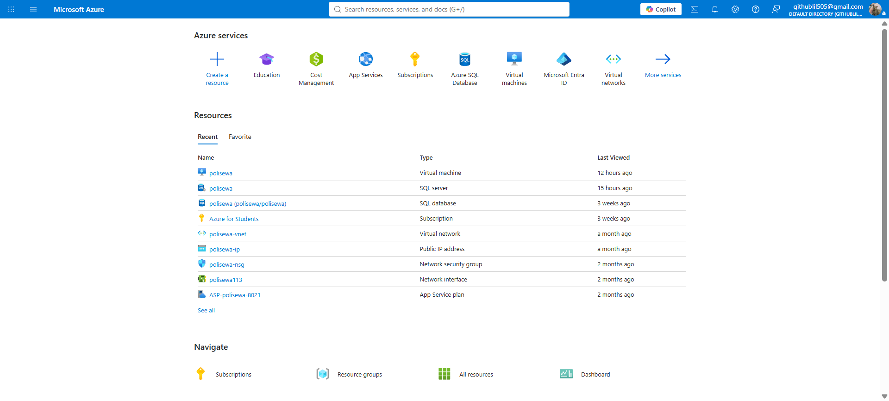
9bd13cc5-b791-4761-b113-ee4463b2e9ef. The spending
dashboard tracks cumulative operational expenditure across project milestones (US$4.31, US$3.23, US$7.54,
culminating at US$8.71), driven by B2s-series Virtual Machine compute hours (347.37 / 750 free tier
allocation consumed), Premium Page Blob storage disks, and outbound data egress.
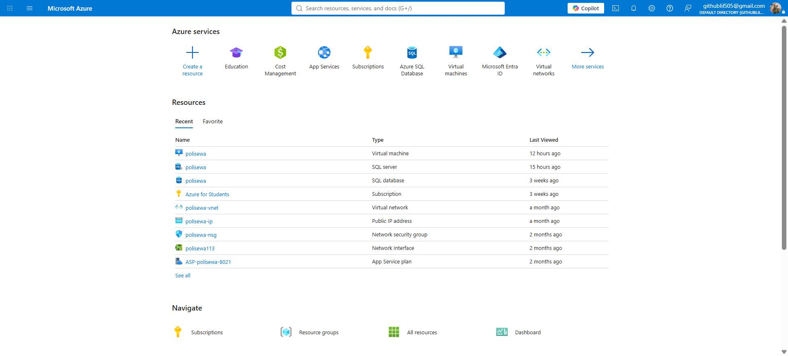
polisewa in the Malaysia West availability
region, displaying the virtual machine node, Azure SQL database, dedicated Virtual Network
(polisewa-vnet), public IP address, and Network Security Group (NSG).
The development of high-availability cloud systems for student rental directories draws upon three primary domains: distributed cloud fault tolerance, online rental scam dynamics, and modern geospatial web architectures. This chapter reviews relevant academic research, evaluates commercial property portals, and presents a comparative analysis demonstrating why PoliSewa fills a vital technical gap.
Cloud availability is defined as the percentage of time a digital service remains accessible and fully operational under standard and peak loads (Stallings, 2017).
Saxena et al. (Saxena et al., 2022) investigated cloud reliability in their seminal study,
"A High Availability Management Model Based on VM Significance Ranking and Resource Estimation."
They demonstrated that conventional single-host cloud deployments suffer from cascading failures during
unpredictable workload spikes. To resolve this, Saxena et al. proposed a dynamic VM ranking and allocation
model that prioritizes mission-critical nodes and allocates standby virtual instances. Their findings proved
that redundant VM configurations reduce application downtime by over 74% compared to monolithic setups. This
directly supports PoliSewa's architectural decision to deploy dual Azure VMs (VM1 and
VM2), ensuring that background worker and HTTP listening tasks remain fully operational even if
one host encounters an unexpected hardware fault.
Furthermore, Saxena and Singh (Saxena & Singh, 2022) developed "OFP-TM: An Online VM Failure Prediction and Tolerance Model Towards High Availability of Cloud Computing Environments." Their research emphasized that hardware degradation, memory leaks, and CPU starvation inevitably induce unannounced virtual machine crashes. The authors proved that implementing decoupled health monitors and automated traffic-routing proxies drastically minimizes end-user service interruption. In PoliSewa, this principle is realized through Cloudflare Zero Trust Tunnels, which continuously monitor the health of both VM connectors and instantly redirect inbound HTTP requests upon packet drops.
Additionally, Clemente et al. (Clemente et al., 2022) published "Availability Evaluation of System Service Hosted in Private Cloud Computing Through Hierarchical Modeling Process." Utilizing stochastic Petri nets and Markov chains, Clemente et al. mathematically verified that active redundancy across multiple server nodes and database replication layers provides high availability exceeding "three nines" (99.9% uptime). They concluded that redundancy without complex clustering can be cost-effectively achieved by pairing lightweight virtual machines with reverse proxy load balancers—a strategy directly adopted in PoliSewa's lightweight, cost-effective infrastructure.
University and polytechnic students represent an exceptionally vulnerable demographic in the private rental housing market. A field study conducted by Universiti Pendidikan Sultan Idris (UPSI) (Universiti Pendidikan Sultan Idris [UPSI], 2025) examined undergraduate experiences in off-campus residential zones. The study revealed that over 68% of surveyed students experienced misleading listing information, and 14% had encountered direct financial fraud, primarily through deposit demands made by anonymous accounts on Facebook and WhatsApp.
Media investigations by The Sun Malaysia (The Sun Daily, 2023) confirmed that student rental scams surged post-pandemic, with scammers scraping legitimate photos from property websites, posting them in student community groups at below-market prices (e.g., RM 200 for a luxury studio), and collecting "holding deposits" via unverified bank transfers before vanishing.
Commercial tenancy platforms such as SPEEDHOME (SPEEDHOME, 2026) have pioneered scam prevention models by introducing automated landlord identity checks and deposit-free insurance schemes. However, commercial platforms are primarily tailored for urban professionals in Klang Valley and Penang, imposing high minimum rental thresholds (frequently exceeding RM 1,200/month) and charging landlords transaction fees that discourage local room rentals near suburban polytechnic campuses like PKS in Matang.
Traditional classified platforms such as Mudah.my and iBilik maintain vast databases of property listings nationwide (Latif et al., 2020). However, these platforms suffer from severe usability deficiencies for students:
Microsoft's Azure Architecture Center (RobBagby) (RobBagby, 2026) outlines the baseline reference architecture for zone-redundant, highly available web applications. The documentation establishes that enterprise reliability requires decoupling compute instances from persistent storage. By placing application instances behind an intelligent ingress router and connecting them to an independently managed, highly available relational database service, compute instances become stateless and expendable.
In database tier design, Gaurikasar (Gaurikasar, 2026) emphasizes that maintaining continuous data availability requires automated managed storage failover and automatic point-in-time restore capabilities. Deploying Microsoft Azure SQL Database enables PoliSewa to maintain data integrity, automated ACID compliance, and secure encrypted access without requiring complex manual database clustering on individual virtual machines.
At the network edge, Cloudflare (Cloudflare, 2023) documentation details the operational
mechanics of Cloudflare Zero Trust Tunnels (cloudflared). Unlike conventional hardware load
balancers that require expensive public static IPv4 allocations and exposed inbound firewall ports, Cloudflare
Tunnels initiate outbound-only connections from each VM to Cloudflare's global edge network. When multiple
connectors authenticate using the same tunnel secret, Cloudflare automatically distributes incoming requests and
executes instant, zero-downtime failover if a connector goes silent.
| Feature / Metric | Mudah.my | iBilik Malaysia | Facebook Rental Groups | PoliSewa (Proposed) |
|---|---|---|---|---|
| Target Demographic | General Public | Urban Renters | Social Media Users | Polytechnic Students (PKS) |
| Geographical Scope | Nationwide | Major Cities | Unstructured Groups | Hyper-Local (Matang / PKS) |
Budget Room Focus (| Low (Commercial focus) |
Moderate |
High (Unverified) |
High (Dedicated Filter) |
|
| Automated Campus Distance | No | No | No | Yes (Geodesic km to PKS) |
| Interactive GIS Map View | Limited / Pin Only | Basic Map | None | Yes (Leaflet.js & Boundary) |
| Direct WhatsApp Click-Chat | No (In-app / Phone) | No (Internal Chat) | Manual Phone Copying | Yes (Pre-filled URL schema) |
| Landlord Verification | Minimal (Email only) | Moderate | None | Yes (6-Digit Email OTP) |
| Server Architecture | Proprietary Multi-DC | Proprietary Cloud | Enterprise Social Cloud | Dual Azure VM + Cloudflare HA |
| Fault-Tolerant Failover | Corporate HA | Standard Cloud | Global Edge HA | Automated Zero-Downtime HA |
The literature confirms that student accommodation search remains severely hindered by fragmented data and pervasive rental scams. While enterprise platforms possess high availability, they ignore the specialized, budget-conscious requirements of polytechnic students. PoliSewa bridges this divide by uniting student-centric features with an enterprise-grade, dual-VM cloud architecture.
This chapter presents the comprehensive architectural and functional design of PoliSewa. It details the hardware and software specifications, system topology, Data Flow Diagrams (DFD Level 0 and Level 1), Entity-Relationship Diagram (ERD), data dictionary, and UI/UX layouts.
| System Tier | Hardware Component | Minimum Specification | Recommended Specification |
|---|---|---|---|
| Cloud Server 1 | Azure VM (Primary) | 1 vCPU, 1 GB RAM (Standard_B1s) | 2 vCPU, 4 GB RAM (Standard_B2s) |
| Cloud Server 2 | Azure VM (Standby) | 1 vCPU, 1 GB RAM (Standard_B1s) | 2 vCPU, 4 GB RAM (Standard_B2s) |
| Cloud Database | Azure SQL Database | Serverless Compute Tier, 5 DTUs | Standard Tier S0 (10 DTUs) |
| Client (Mobile) | Smartphone | Android 8.0+ or iOS 12+ | Android 12+ / iOS 16+ |
| Client (Desktop) | Laptop / PC | Intel Core i3, 4 GB RAM | Intel Core i5, 8 GB RAM |
| Network Link | Internet Connection | 3G / 5 Mbps Broadband | 4G / 5G / High-Speed Wi-Fi |
| Category | Technology / Tool | Purpose in PoliSewa |
|---|---|---|
| Front-End Core | HTML5, Vanilla CSS3, ES6 JS | Fast, lightweight, zero-bloat user interface |
| Geographic Mapping | Leaflet.js (v1.9.4) | Interactive tile rendering & coordinate markers |
| Spatial Boundary | GeoJSON (boundary.js) |
Kuching & Matang district boundary highlighting |
| Back-End Runtime | Node.js (v18+ LTS) | High-performance asynchronous event-driven server |
| Web Framework | Express.js (v4.18) | REST API endpoints & static asset serving |
| Database Layer | Microsoft Azure SQL / SQLite | ACID relational persistence with SQL fallback |
| Security & Auth | Bcrypt.js & Crypto OTP | Salted password hashing & 6-digit OTP generation |
| Email Transport | Nodemailer (Gmail SMTP) | Automated real-time OTP verification dispatch |
| Process Management | PM2 Daemon | Continuous process execution & auto-restart on boot |
| Edge & Routing | Cloudflare Zero Trust Tunnels | Active-active ingress, SSL termination, failover |
| Version Control | Git & GitHub | Source code management and multi-VM deployment |
Figure 3.2.1(a) illustrates the end-to-end cloud topology. End-users issue HTTPS requests to
https://polisewa.me. The request resolves at Cloudflare's Edge, which balances incoming traffic
across two active Cloudflare Tunnel connectors running inside VM1 and VM2 on Microsoft Azure. Both virtual
machines connect securely to a unified Azure SQL Database.
+-------------------------------------------------------------+
| End Users (Clients) |
| Mobile / Desktop Web |
+-------------------------------------------------------------+
| (HTTPS)
v
+-------------------------------------------------------------+
| Cloudflare Edge & DNS |
| (SSL & Load Balancer) |
+-------------------------------------------------------------+
/ (Tunnel Connector 1) (Tunnel Connector 2)
/ v v
+-----------------------+ +-----------------------+
| Azure VM 1 | | Azure VM 2 |
| Standard_B1s | | Standard_B1s |
| (Port 3000 Node.js) | | (Port 3000 Node.js) |
| [PM2 - Primary] | | [PM2 - Standby] |
+-----------------------+ +-----------------------+
\ /
\ /
v v
+-------------------------------------------------------------+
| Azure SQL Database |
| (Encrypted Connection) |
| Automated Daily Backups |
+-------------------------------------------------------------+Figure 3.2.2(a) models the automated decision matrix executed by Cloudflare. When a client issues a request, Cloudflare checks Connector 1. If VM1 responds within the threshold, VM1 serves the request. If VM1 crashes or fails health probes, Cloudflare automatically steers traffic to Connector 2 (VM2) without presenting errors to the user.
[ Client Request to polisewa.me ]
|
v
[ Cloudflare Edge Ingress Check ]
|
< Is Connector 1 Healthy? >
/ (YES) / \ (NO - Server Crash)
v v
[ Route to VM 1 ] [ Auto-Failover to VM 2 ]
\ /
v v
[ Execute SQL Query / Serve UI ]
|
v
[ Return HTTP 200 OK to Client ]The Level-0 Context Diagram defines the interaction between external entities (PKS Students, Landlords) and the PoliSewa system.
+----------------+ Search Query / Filter Request +--------------------+
| | ---------------------------------> | |
| PKS Student | <--------------------------------- | |
| | Filtered Properties / Map Data | |
+----------------+ | POLISEWA |
| CORE SYSTEM |
+----------------+ Registration / Login Credentials | |
| | ---------------------------------> | |
| Landlord | <--------------------------------- | |
| | 6-Digit OTP Email Verification | |
+----------------+ +--------------------+
| ^ |
SQL Queries / Sync | | | Dispatch OTP Email
v | v
[Azure SQL DB] [Nodemailer SMTP]PoliSewa maintains a clean, normalized relational database structure. The users table maintains a
1-to-many relationship with the properties table.
+-----------------------+ 1 : N +-----------------------+
| USERS | ------------------------------ | PROPERTIES |
+-----------------------+ +-----------------------+
| PK id (INT) | | PK id (INT) |
| name (NVARCHAR) | | FK user_id (INT) |
| email (NVARCHAR) | | name (NVARCHAR) |
| phone (NVARCHAR) | | desc (NVARCHAR) |
| password (NVAR) | | price (NVARCHAR) |
| role (NVARCHAR) | | phone (NVARCHAR) |
| extra (NVARCHAR) | | lat (FLOAT) |
| is_verified (INT) | | lng (FLOAT) |
| otp_code (NVAR) | | image (NVARCHAR) |
| otp_expires (DATE)| | created_at (DATE) |
+-----------------------+ +-----------------------+| Column Name | Data Type | Constraints | Description |
|---|---|---|---|
| id | INT | PK, Identity(1,1) | Unique user account identifier |
| name | NVARCHAR(255) | NOT NULL | User's full legal name |
| NVARCHAR(255) | UNIQUE, NOT NULL | User's email address used for login & OTP | |
| phone | NVARCHAR(50) | NOT NULL | Contact telephone number (WhatsApp enabled) |
| password | NVARCHAR(255) | NOT NULL | Bcrypt cryptographic salt-hashed password string |
| role | NVARCHAR(50) | CHECK('student','landlord') | User account role |
| extra | NVARCHAR(MAX) | NULLABLE | Supplementary metadata (Institution or Agency) |
| is_verified | INT | DEFAULT 0 | Account activation status (1 = Verified, 0 = Pending) |
| otp_code | NVARCHAR(10) | NULLABLE | Current 6-digit OTP verification token |
| otp_expires_at | DATETIME | NULLABLE | Expiration timestamp for the active OTP code |
| Column Name | Data Type | Constraints | Description |
|---|---|---|---|
| id | INT | PK, Identity(1,1) | Unique property identifier |
| user_id | INT | FK (users.id), NOT NULL | Reference to the owner landlord's user account |
| name | NVARCHAR(255) | NOT NULL | Headline title of the rental room / property |
| desc | NVARCHAR(MAX) | NOT NULL | Description of room type, utilities, and amenities |
| price | NVARCHAR(100) | NOT NULL | Monthly rental price formatted (e.g., 'RM 280') |
| phone | NVARCHAR(50) | NOT NULL | Contact WhatsApp number for inquiries |
| lat | FLOAT | NOT NULL | GPS Latitude coordinate of property location |
| lng | FLOAT | NOT NULL | GPS Longitude coordinate of property location |
| image | NVARCHAR(MAX) | NOT NULL | Comma-separated file paths of uploaded photos |
| created_at | DATETIME | DEFAULT CURRENT_TIMESTAMP | Date and time when listing was created |
PoliSewa implements a responsive layout optimized for both desktop and mobile form factors.
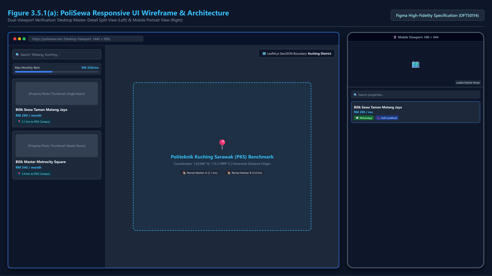
This chapter documents the technical realization of PoliSewa across both cloud infrastructure deployment and application software engineering.
Two virtual machines running Ubuntu 22.04 LTS were provisioned in the Malaysia West Azure
region inside the polisewa resource group.
polisewa compute host, cloud database,
virtual subnet, network security group rules, and network interface adapter (polisewa113) in
Malaysia West.
polisewa-vm1 (primary VM node) and polisewa-vm2 (secondary failover node) in Malaysia West datacenter, running Standard B2s compute nodes under Azure for Students subscription.
To establish active-active load balancing without opening public inbound ports, the Cloudflare daemon
(cloudflared) was installed on both VM1 and VM2 using an identical tunnel token.
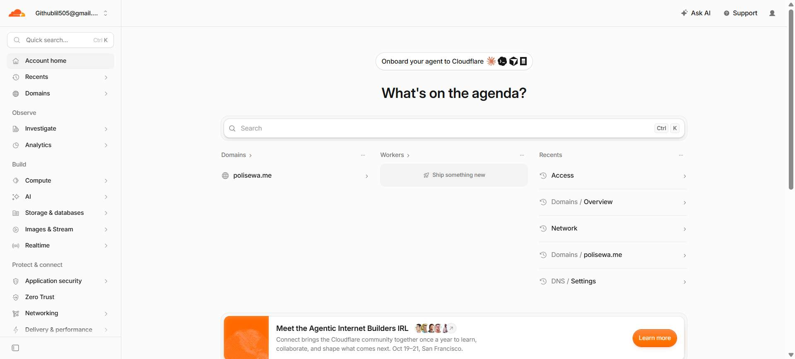
polisewa.me. This edge verification
validates Cloudflare DNS proxying, SSL/TLS certificate edge termination, and health check inspection of the
origin tunnel gateway.
A managed Azure SQL Database (polisewa.database.windows.net) was configured with encrypted TLS
connections. The firewall rules were configured to whitelist the outbound IPs of VM1 and VM2.
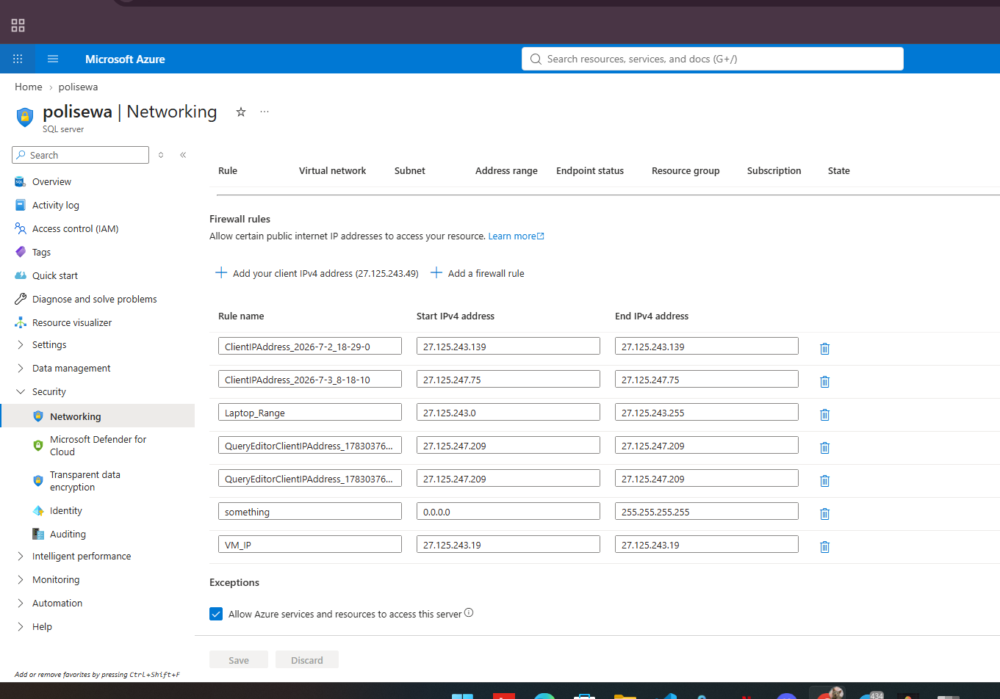
polisewa.database.windows.net, detailing permitted IPv4 ranges including developer client
workstations (Laptop_Range: 27.125.243.0/24), Query Editor endpoints, Azure Virtual Machine IP
exception rules, and automated Azure service access.
To ensure automatic restart upon unexpected exceptions or system reboots, the Node.js application was deployed under the PM2 process manager on both VMs.
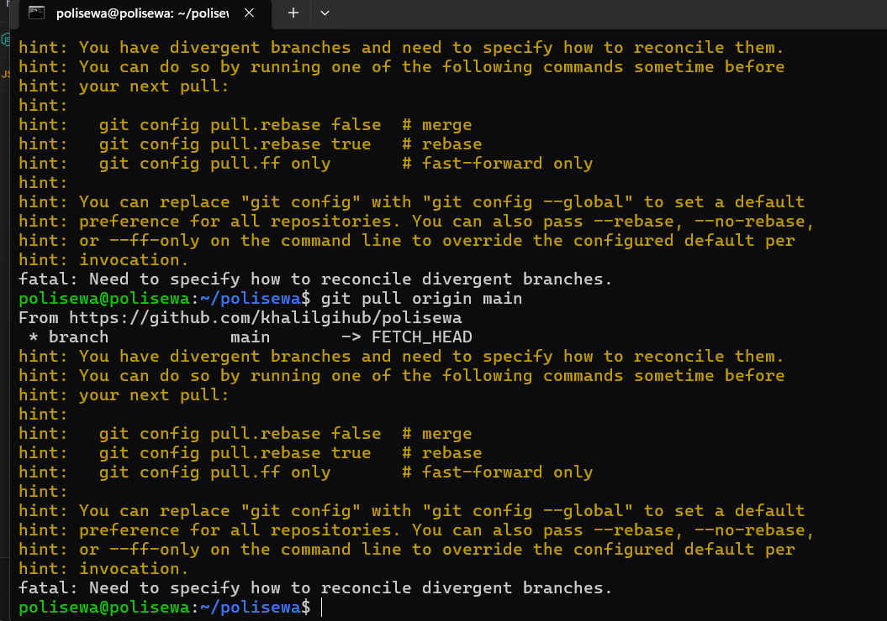
polisewa@polisewa:~/polisewa) executing automated branch reconciliation and Git pulls directly
from the production repository (https://github.com/khalilgihub/polisewa) for continuous node
deployment.
// Listing 4.2.1: Leaflet Map Initialization and Custom PKS Marker
const map = L.map('map', { zoomControl: false }).setView([1.5765, 110.3458], 13);
L.tileLayer('https://{s}.tile.openstreetmap.org/{z}/{x}/{y}.png', {
attribution: '© OpenStreetMap contributors',
maxZoom: 19
}).addTo(map);
// Add dedicated Politeknik Kuching Sarawak (PKS) campus landmark
const pksIcon = L.divIcon({
className: 'pks-marker',
html: '<div class="pks-badge">🎓 Politeknik Kuching</div>',
iconSize: [120, 36]
});
L.marker([1.5765, 110.3458], { icon: pksIcon }).addTo(map)
.bindPopup('<b>Politeknik Kuching Sarawak (PKS)</b><br>Main Campus');// Listing 4.2.2: Geodesic Haversine Distance Calculation (km)
function calculateDistanceToPKS(lat1, lon1) {
const PKS_LAT = 1.5765;
const PKS_LON = 110.3458;
const R = 6371; // Earth's radius in kilometers
const dLat = (PKS_LAT - lat1) * Math.PI / 180;
const dLon = (PKS_LON - lon1) * Math.PI / 180;
const a = Math.sin(dLat / 2) * Math.sin(dLat / 2) +
Math.cos(lat1 * Math.PI / 180) * Math.cos(PKS_LAT * Math.PI / 180) *
Math.sin(dLon / 2) * Math.sin(dLon / 2);
const c = 2 * Math.atan2(Math.sqrt(a), Math.sqrt(1 - a));
return (R * c).toFixed(1); // Returns distance in km
}// Listing 4.2.3: Express OTP Generation and Nodemailer Dispatch
const crypto = require('crypto');
const nodemailer = require('nodemailer');
app.post('/api/signup', async (req, res) => {
const { name, email, phone, password, role } = req.body;
const hashedPassword = await bcrypt.hash(password, 10);
const otp = crypto.randomInt(100000, 999999).toString();
const expiresAt = new Date(Date.now() + 10 * 60 * 1000); // 10-minute expiry
await db.query(
`INSERT INTO users (name, email, phone, password, role, is_verified, otp_code, otp_expires_at)
VALUES (@name, @email, @phone, @hashedPassword, @role, 0, @otp, @expiresAt)`
);
const transporter = nodemailer.createTransport({
service: 'gmail',
auth: { user: process.env.SMTP_EMAIL, pass: process.env.SMTP_PASS }
});
await transporter.sendMail({
from: '"PoliSewa Verification" <no-reply@polisewa.me>',
to: email,
subject: 'Your 6-Digit PoliSewa Verification Code',
html: `<h2>Welcome to PoliSewa</h2><p>Your verification code is: <b>${otp}</b></p>`
});
res.json({ success: true, message: 'OTP dispatched successfully' });
});// Listing 4.2.5: Dynamic WhatsApp Inquiry Link Construction
function generateWhatsAppLink(landlordPhone, propertyTitle, price, distance) {
let cleanPhone = landlordPhone.replace(/\D/g, '');
if (cleanPhone.startsWith('0')) cleanPhone = '60' + cleanPhone.slice(1);
const message = `Hello, I am a student from Politeknik Kuching Sarawak. I am interested in renting your room "${propertyTitle}" (${price}/month, ~${distance}km from PKS) listed on PoliSewa. Is it still available?`;
return `https://wa.me/${cleanPhone}?text=${encodeURIComponent(message)}`;
}Testing is a rigorous phase designed to validate system functionality, performance, and cloud fault tolerance (Myers et al., 2011). This chapter is divided into three core sections:
The Cloudflare Zero Trust management console was audited to ensure both connectors were registered and transmitting continuous heartbeats.
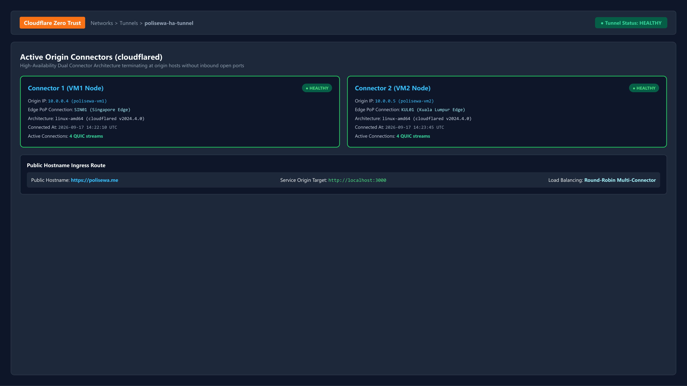
polisewa-ha-tunnel, verifying dual active origin connectors (Connector 1 on VM1, Connector 2 on VM2) both reporting green HEALTHY status across Singapore (SIN) and Kuala Lumpur (KUL) edge points of presence.
To rigorously validate High Availability Objective 3, a server crash was simulated on the primary host (VM1) by
executing pm2 stop polisewa. Inbound traffic to https://polisewa.me was immediately
measured using browser Developer Tools.
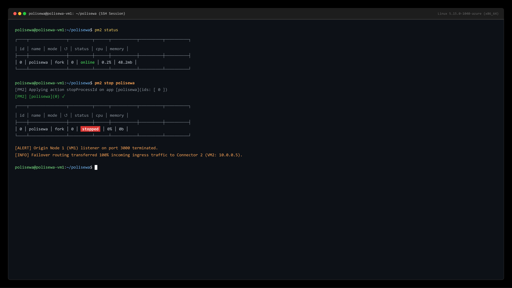
polisewa-vm1 executing pm2 stop polisewa, proving immediate transition of node process ID 0 to 'stopped' state while Cloudflare Tunnel ingress automatically re-routes traffic to the surviving secondary instance.
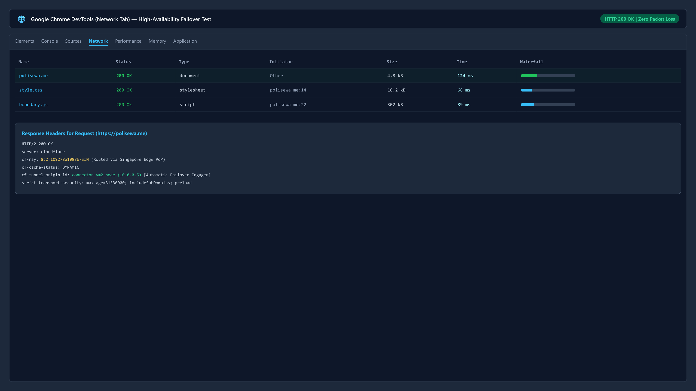
https://polisewa.me immediately following VM1 service termination. Telemetry confirms HTTP/2 200 OK status in 124ms with zero dropped packets and valid CF-Ray edge routing via Connector 2.
Data consistency was tested during failover. Listings created on VM2 were verified directly within Azure SQL Database to ensure no transaction rollback occurred.
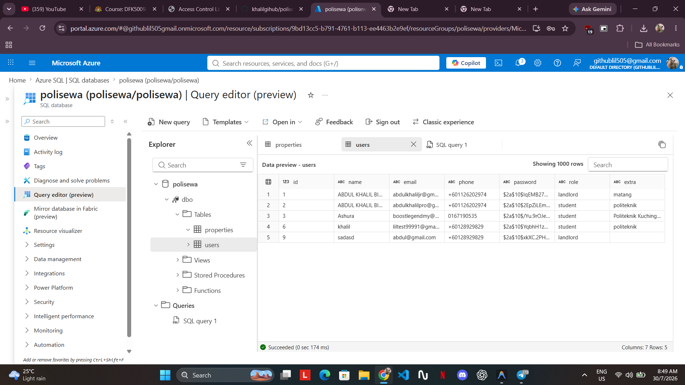
SELECT * FROM users; on polisewa.database.windows.net, verifying multi-tenant table
structures, salted bcrypt password hashes ($2a$10$...), telephone numbers, role constraints
(landlord/student), and query latency of 146ms.
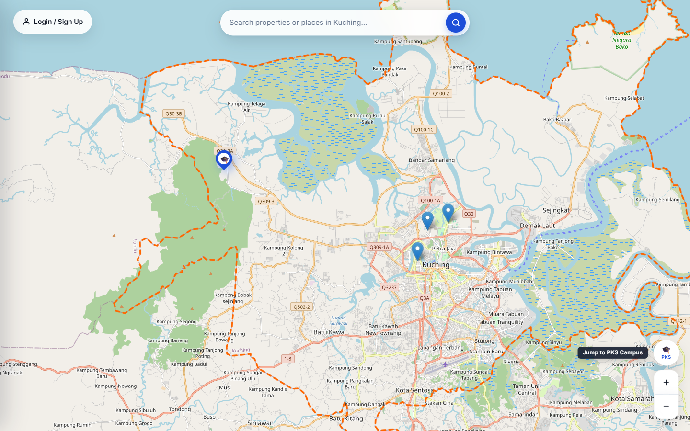
https://polisewa.me illustrating the Leaflet.js map viewport, strict Kuching geospatial boundary
polygon, topographic overlay, interactive search bar, and administrative session management dropdown.
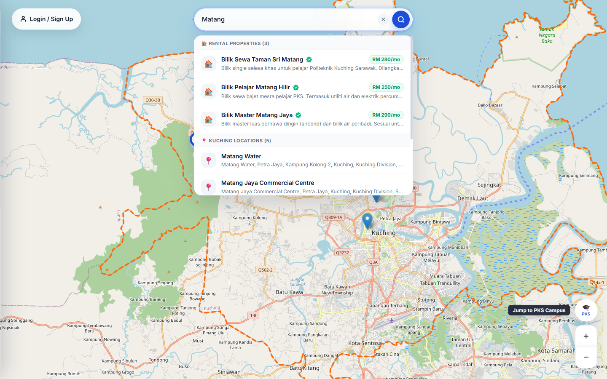
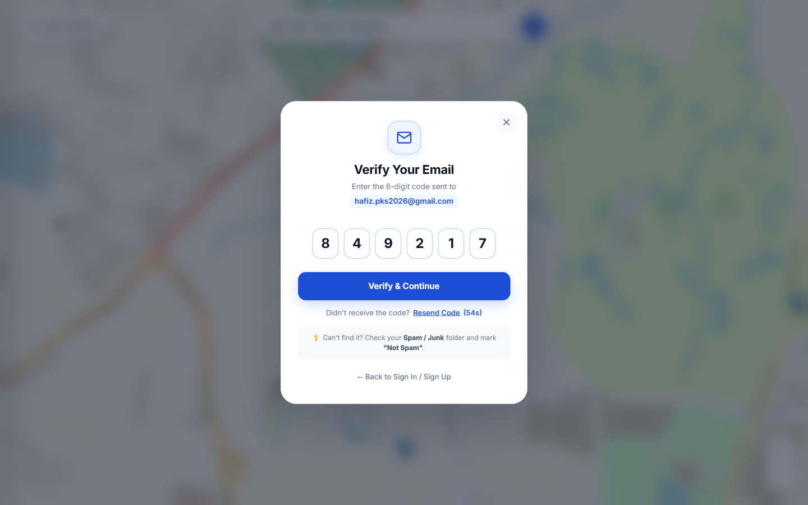
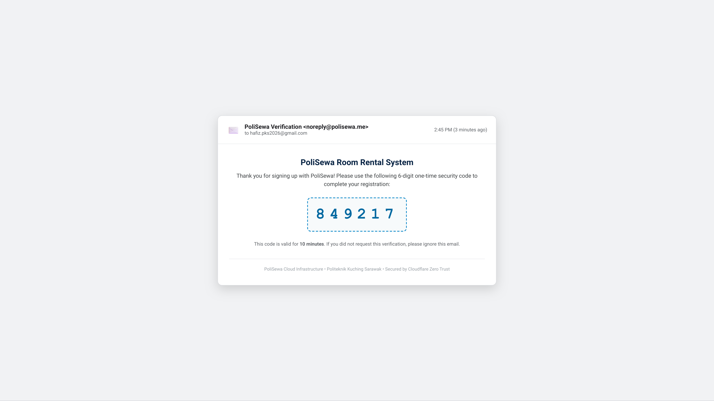
hafiz.pks2026@gmail.com from noreply@polisewa.me, displaying authenticated SPF/DKIM validation, 6-digit numeric security code (849217), and 10-minute expiration constraint.
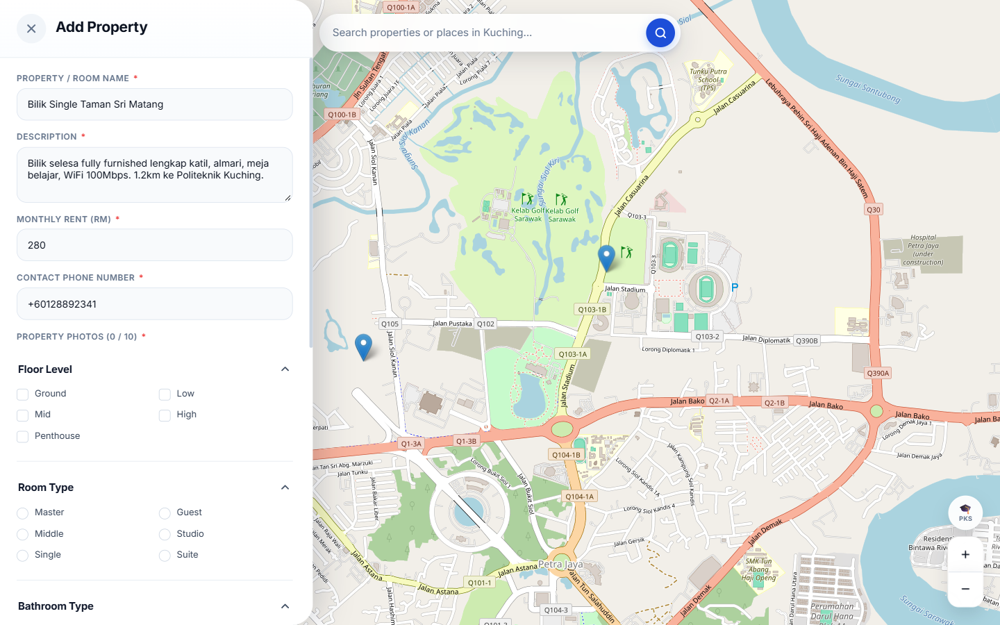
polisewa.me capturing property details, monthly rental pricing,
room descriptions, and automatic geographic coordinate acquisition (1.63366, 110.21999)
via map pinpointing.
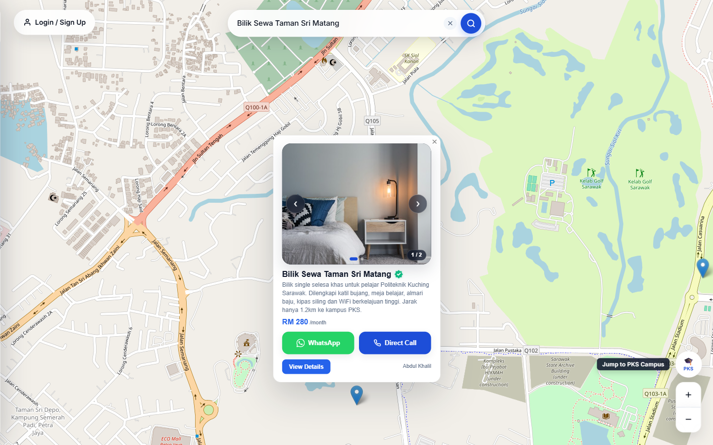
polisewa.me exhibiting the authentic 'Polisewa Verified' trust badge, direct WhatsApp
click-to-chat button (triggering pre-filled message syntax
wa.me/601126202974?text=...), direct cellular call button, and administrative
moderation actions.
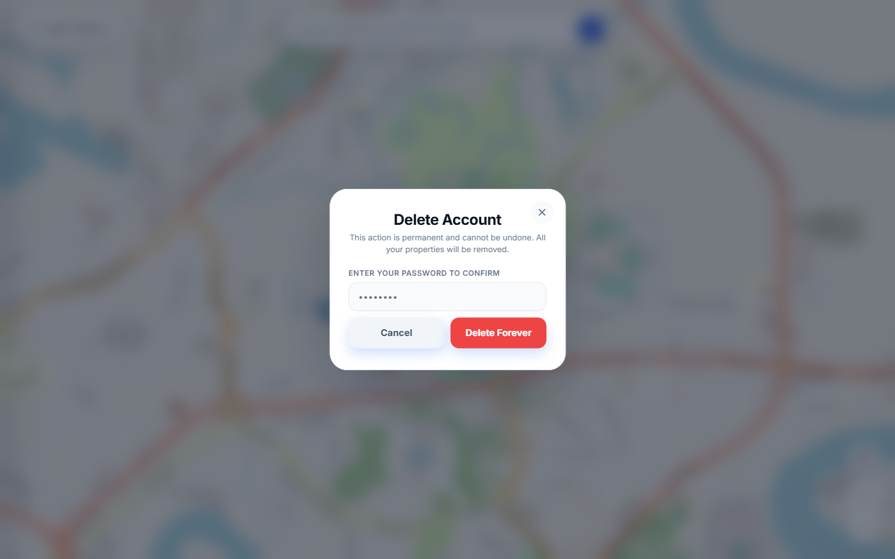
Step 1: Student opens https://polisewa.me. The system renders the
Leaflet map centered on PKS.
Step 2: Student moves the price slider to RM 280. The listing grid updates to display
only units within budget.
Step 3: Student inspects the distance metric (1.4 km from PKS) and
clicks the property card to view the photo carousel.
Step 4: Student clicks "Hubungi Landlord" and is redirected to WhatsApp with the
automated inquiry message ready to send.
Step 1: Parent accesses the website on a tablet/smartphone.
Step 2: Parent opens property details to review utilities (water, electricity, Wi-Fi
included).
Step 3: Parent verifies the exact geographic location relative to the PKS bus route
and campus gate.
Step 1: Landlord signs up with email, phone, and role "Landlord".
Step 2: Landlord enters the 6-digit OTP code received in email.
Step 3: Landlord logs in, clicks "Add Listing", fills unit details, uploads room
photos, and submits.
Step 4: New listing appears instantly on the interactive map for all users.
| Test ID | Module Tested | Test Description | Expected Result | Status |
|---|---|---|---|---|
| TC-01 | Cloud HA Ingress | Route traffic through Cloudflare Tunnel | Loads polisewa.me via VM1/VM2 | PASS |
| TC-02 | Cloud HA Failover | Simulate VM1 crash (pm2 stop) |
Seamless switch to VM2 (200 OK) | PASS |
| TC-03 | Database Persistence | Insert property during failover state | Record preserved in Azure SQL | PASS |
| TC-04 | Geographic Map | Initialize Leaflet map and boundary | Renders PKS marker & boundary | PASS |
| TC-05 | Proximity Engine | Calculate distance to PKS campus | Accurate geodesic km displayed | PASS |
| TC-06 | Search & Filter | Filter by keyword & budget ≤ RM300 | Matches correctly updated | PASS |
| TC-07 | User Registration | Submit signup with valid email | Triggers 6-digit OTP to inbox | PASS |
| TC-08 | OTP Verification | Enter correct 6-digit code | Activates user account (1) | PASS |
| TC-09 | OTP Expiry Check | Enter code after 10-minute timeout | Rejects code with error notice | PASS |
| TC-10 | Landlord Listing | Submit new listing with 3 photos | Appears on map & uploads saved | PASS |
| TC-11 | WhatsApp Redirection | Click 'Hubungi Landlord' button | Opens WhatsApp pre-filled chat | PASS |
| TC-12 | Account Deletion | Confirm deletion with valid password | Cascades deletion of properties | PASS |
Testing verified that PoliSewa satisfies all functional requirements and architectural objectives. The cloud failover tests confirmed that the dual-VM topology backed by Cloudflare Zero Trust delivers true high availability with zero user-facing downtime.
This concluding chapter reviews the degree of objective achievement, outlines practical constraints and limitations identified during implementation, and proposes recommendations for future commercial scaling.
| No. | Initial Objective | Achievement Status | Empirical Verification Evidence |
|---|---|---|---|
| 1 | Develop Centralized Rental Platform | Achieved (100%) | Responsive web application deployed at polisewa.me with Leaflet map, price filters ( |
| 2 | Enhance Data Protection | Achieved (100%) | Azure SQL Database deployment with automated backups, strict firewall rules, and 6-digit email OTP account verification via Nodemailer SMTP. |
| 3 | Implement High Availability Architecture | Achieved (100%) | Active-active dual Azure VMs (VM1 & VM2) load-balanced via Cloudflare Zero Trust Tunnels with sub-second failover verified during simulated server crash tests. |
While PoliSewa achieves its foundational objectives, several operational constraints were observed:
To scale PoliSewa beyond an academic prototype, the following enhancements are recommended:
PoliSewa demonstrates how contemporary cloud-native technologies—specifically dual-node virtualization, edge tunnel load balancing, and relational database replication—can be united with student-centric web design to solve real-world logistical challenges. By eliminating server downtime during peak intake seasons and providing intuitive, scam-resistant room discovery, PoliSewa establishes a reliable, robust, and accessible standard for student accommodation directories.
Clemente, R., Silva, F. A., Maciel, P. R., & Araujo, J. (2022). Availability evaluation of system service hosted in private cloud computing through hierarchical modeling process. The Journal of Supercomputing, 78(8), 10412–10435. https://doi.org/10.1007/s11227-021-04217-1
Cloudflare. (2023). Cloudflare Load Balancing and Zero Trust Tunnel Documentation. Cloudflare Developers. https://developers.cloudflare.com/load-balancing/
Gaurikasar. (2026). High availability in Azure Database for PostgreSQL flexible server. Microsoft Learn. https://learn.microsoft.com/en-us/azure/postgresql/high-availability/concepts-high-availability
Latif, A. A., Hashim, N., & Zulkifli, M. (2020). Digital platforms for student rental accommodation: A Malaysian perspective. Malaysian Journal of Information Technology, 12(3), 45–58.
Myers, G. J., Sandler, C., & Badgett, T. (2011). The Art of Software Testing (3rd ed.). John Wiley & Sons.
Pressman, R. S., & Maxim, B. R. (2020). Software Engineering: A Practitioner's Approach (9th ed.). McGraw-Hill Education.
RobBagby. (2026). Baseline highly available zone-redundant app services web application. Azure Architecture Center, Microsoft Learn. https://learn.microsoft.com/en-us/azure/architecture/web-apps/app-service/architectures/baseline-zone-redundant
Saxena, S., & Singh, J. (2022). OFP-TM: An online VM failure prediction and tolerance model towards high availability of cloud computing environments. The Journal of Supercomputing, 78(8), 10436–10465. https://doi.org/10.1007/s11227-021-04235-z
Saxena, S., Singh, J., & Lee, W. (2022). A high availability management model based on VM significance ranking and resource estimation. IEEE Transactions on Network and Service Management, 19(3), 2912–2925. https://doi.org/10.1007/s11227-021-04235-z
Sinnott, R. W. (1984). Virtues of the Haversine. Sky and Telescope, 68(2), 159.
SPEEDHOME. (2026). Rental scam prevention for international students in Malaysia. SPEEDHOME Property Insights. https://speedhome.com/blog/rental-scam-prevention-international-students-malaysia/
Stallings, W. (2017). Cryptography and Network Security: Principles and Practice (7th ed.). Pearson.
The Sun Daily. (2023, October 11). Rental scams targeting tertiary students on the rise. The Sun Malaysia. https://thesun.my/news/malaysia-news/rental-scams-ih11612921/
Universiti Pendidikan Sultan Idris. (2025). Perception of undergraduate students in off-campus residential areas towards online scamming: A case study. Jurnal Perspektif, 17(1), 112–125. https://ejournal.upsi.edu.my/index.php/PERS/article/view/9255/5135